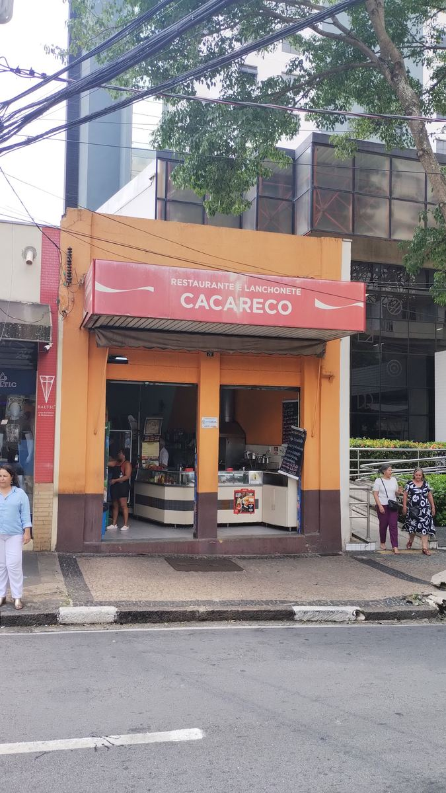
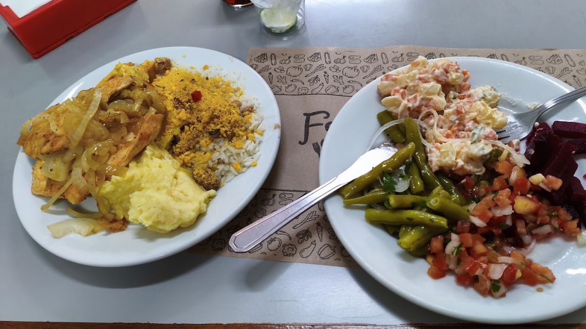
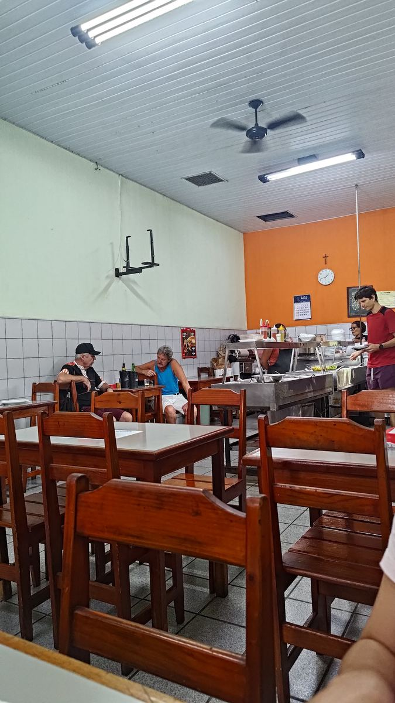

Almoço caseiro que ninguém faz igual, no coração do Centro.
Buffet de comida brasileira com mistura, marmita para levar, lanches e salgados desde cedo. Simples, rápido e com preço justo, do jeito que o Centro precisa.
Seg a sex 7h às 20h · fim de semana até 15h

Do café ao fim da tarde
Café e salgado
Abre cedo para quem passa a caminho do trabalho. Os salgados são dos mais elogiados.
Almoço
Buffet de comida caseira com a mistura do dia, ou marmita para levar.
Lanches
Lanche e salgado até o fim do dia, de segunda a sexta até as 20h.


Uma mistura, o resto à vontade
- 1Escolha a mistura do dia: bife, frango, carne de panela...
- 2Sirva-se à vontade do arroz, feijão, guarnições e saladas.
- 3Com pressa? Peça a marmita por telefone e passe para buscar.
Um rinoceronte no nome, décadas na Rua Conceição
O nome é uma homenagem ao Cacareco, o rinoceronte que ficou famoso no Brasil nos anos 1950. E a casa também é dessa época: segundo quem conta a história do Centro, o Cacareco está na Rua Conceição desde a década de 1950.
De lá para cá, a tradição continua a mesma: comida brasileira caseira, servida com simpatia.
O Centro aprova
Atendimento de qualidade, preço justo e o almoço, ninguém faz igual.Resumo das avaliações · Google
Comida caseira excelente, muito saborosa e preço justo. O atendimento é muito bom, todos simpáticos e bem educados.Aigline · Google
Comida simples e saborosa: uma mistura e o restante do buffet à vontade.Ícaro · Google
Rua Conceição, 211
| Segunda a sexta | 7h às 20h |
| Sábado e domingo | 7h às 15h |
R. Conceição, 211 · Shopping Conceição · Centro, Campinas (SP)
Telefone (19) 3232-0704 · @restaurantecacareco